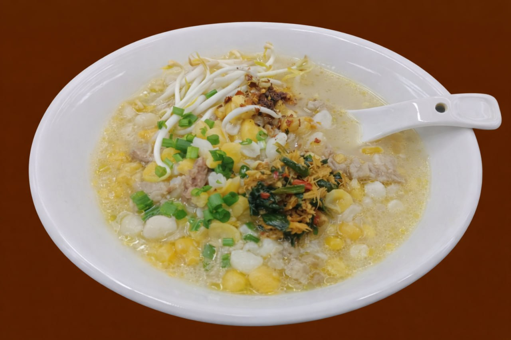

ဆာဗူးသီး
ပြောင်းဆန်ကို မချက်ခင် (၁)ည ရေစိမ်ထားပီး နောက်ရက်မနက်မှာ ထမင်းပေါင်းအိုးနဲ့ထည့်ပြုတ်ပါတယ်
👍ဝက်သားကို တခါတည်းထည့်ပြုတ်ပါတယ် (အမဲသားဆိုလည်း စားကောင်းတယ်)
👍အူနဲ့အသည်းကိုတော့ သေချာသန့်စင်ပြီး တရေပြုတ်ပြီးမှ ထည့်ပြုတ်ပါတယ်
👍ငရုတ်သီးကလည်း microwave နဲ့ စက္ကန့်၄၀ဆိုရပီ
ငရုတ်သီးလှော်ကိုထောင်း ဆား ဟင်းချိုမှုန့် သံပုရာသီး ကြက်သွန်နီပါးပါးလှီး အားလုံးနဲ့သမာအောင်မွှေလိုက်ရုံပါပဲ (နံနံပင်ကြိုက်ရင်ထည့်ပါ)
အစာကြေညက်စေခြင်း: အမျှင်ဓာတ်ပါဝင်လို ဝမ်းမှန်စေပြီး အစာခြေစနစ်ကို အထောက်အကူပြုပါတယ်။ ခံတွင်းမြိန်စေခြင်း: ချဉ်ဖြုံဖြုံအရသာကြောင့် ဖျားနာပြီးခါစ သိုမဟုတ် ခံတွင်းပျက်နေသူများအတွက် ထမင်းစားမြိန်စေပါတယ်။ ကိုယ်တွင်းအပူငြိမ်းခြင်း: ဗူးသီးရဲ့ အအေးဓာတ်ကြောင့် ခန္ဓာကိုယ်အပူအောင်းခြင်းကို လျှော့ချပေးပါတယ်။ ဝိတ်ကျစေခြင်း: ကယ်လိုရီနည်းပြီး ဗိုက်ပြည့်လွယ်တာကြောင့် ကိုယ်အလေးချိန်ထိန်းသူများအတွက် သင့်တော်ပါတယ်။
ပြောင်းဆန်၊ ဝက်သား၊ အူနဲ့အသည်း၊ ငရုတ်သီး၊ ဆား ဟင်းချိုမှုန့် ၊ သံပုရာသီး၊ ကြက်သွန်နီ၊ နံနံပင်
ဆာဗူးသီးသည် ချင်း လူမျိုးတို၏ အဓိကဟင်းလျာအဖြစ် စားသုံးသော အစားအစာ အမျိုးအစား မဟုတ်ဘဲ အဆာပြေစားသုံးသော အစားအစာ(Snack) အမျိုးအစားတစ်မျိုးဖြစ်သည်။ ဆာဗူးသီး အစားအစာသည် မည်သည့်အချိန်က စတင်ပေါ်ပေါက်ခဲ့သည်ကို မှတ်တမ်းတင်ထားသော အထောက် အထားများ ရှာမတွေ့သေးပါ။ သိုသော်လည်း ရှေးနှစ်ပေါင်းများစွာ ကတည်းက ပေါ်ပေါက်လာခဲ့ပြီး မြန်မာဘုရင်များလက်ထက်၊ ချင်းစော်ဘွားများခေတ် ကတည်းက စော်ဘွားများမှစ၍.. သာမန်ပြည်သူများအထိ ဆာဗူးသီးအစားအစာကို နှစ်ခြိုက်ခုံမင်စွာ စားသုံးခဲ့ကြသည်ဟု ချင်းလူကြီးသူမများက ပြောဆိုခဲ့သည်။ ဆာဗူးသီးဟူသော ချင်းဝေါဟာရမှာ ချင်းပြည်နယ်၊ ဟားခါး စကားဖြစ်သည်။ ဆာမှာ အသားဟု မြန်မာလိုအဓိပ္ပာယ်ရပြီး ဗူးသီးမှာ ပြောင်းဖူး ပြုတ်ရည်ဟု အဓိပ္ပာယ်ထွက်သည်။